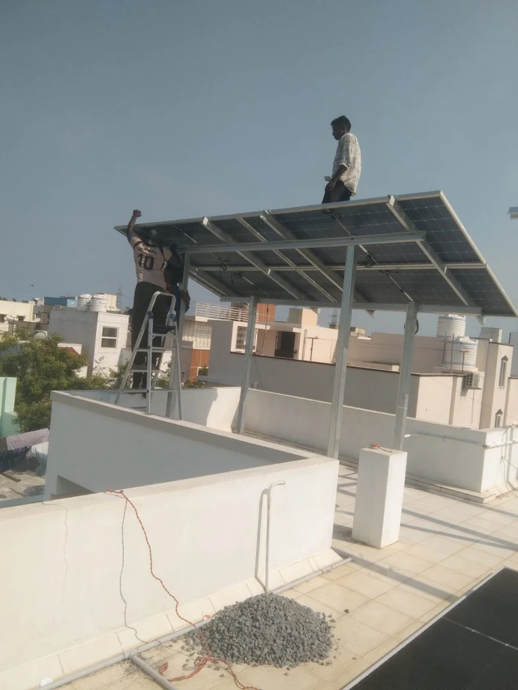

01
Structure
Leg height, row spacing, and bracing are set so wind and foot traffic do not fight the array. Civil work for the mounting is included.
Full rooftop plant
ZeroEB fits modules, structure, and wiring as one job. The roof stays walkable, the penetrations are sealed, and the plant is tested before we leave.

What the visit decides
Most Chennai terraces are not empty slabs. There is a water tank, a drying line, a stair cover, and a neighbour’s wall that throws shade after 3 pm. We measure those first. Panel count comes after, from your bill and from the clear area that is left.
If the quote you already have only states kilowatts and a brand, ask where people will walk. A low clamp-down array can block the terrace. An elevated structure keeps the floor free, but only if the legs, bracing, and waterproofing are part of the same drawing.
Walkway left clearShade mappedBill-based sizeOn the roof
A complete plant from our Madipakkam team. City paperwork and neighbourhood coverage are on the Chennai installation page.
Leg height, row spacing, and bracing are set so wind and foot traffic do not fight the array. Civil work for the mounting is included.
Wattage, temperature coefficient, and DCR status are written on the quote. Subsidy plants use domestically manufactured cells and modules. How to choose them for a house is on panels for a Chennai home.
Strings, inverter location, and cable routes are planned so the inverter is ventilated and the terrace is not crossed by loose loops.
Earth pits, protection devices, polarity checks, and a generation test happen before handover. Photos of the finished roof are part of that record.
A full plant, not a clamp-on
Some homeowners already have panels in a godown and only need them fitted. That is labour, structure work, and wiring — quoted on our installation services page, with materials excluded. This page is the other scope: we specify the modules, bring them, and commission the plant.
The split matters for the subsidy. Eligible homes can receive up to ₹78,000, and that path needs DCR modules plus the net-meter file. If a cheaper NDCR module is on the table, read NDCR vs DCR before you lock the order. Once a non-DCR application is confirmed, the subsidy choice cannot be reopened. South Chennai terraces are drawn one street at a time: the Adyar installation, the Besant Nagar installation, the Thiruvanmiyur installation, the Velachery installation, the Madipakkam installation, the Nanganallur installation, the Adambakkam installation, and the Alandur installation. The next streets are the Guindy installation, the Perungudi installation, the Taramani installation, the Pallikaranai installation, the Medavakkam installation, the Keelkattalai installation, and the Kovilambakkam installation. Along the coast are the Sholinganallur installation, the Thoraipakkam installation, the Neelankarai installation, the Palavakkam installation, the Kottivakkam installation, the Injambakkam installation, the ECR installation, and the OMR installation. Toward the railway are the Tambaram installation, the Pallavaram installation, the Chromepet installation, the Pammal installation, and the Perungalathur installation. In the south layouts are the Selaiyur installation, the Kelambakkam installation, the Siruseri installation, the Padur installation, and the Thalambur installation. In the older city are the Mylapore installation, the R.A. Puram installation, the Alwarpet installation, the Teynampet installation, the T. Nagar installation, the Nungambakkam installation, the Gopalapuram installation, the Royapettah installation, the Saidapet installation, the Egmore installation, the Triplicane installation, and the Mandaveli installation. Along the west are the Anna Salai installation, the West Mambalam installation, the Kodambakkam installation, the Kilpauk installation, and the Anna Nagar installation. North of the city are the Perambur installation, the Villivakkam installation, the Kolathur installation, the Madhavaram installation, the Puzhal installation, and the Red Hills installation. Toward the harbour are the Tondiarpet installation, the Royapuram installation, the Washermenpet installation, the Manali installation, the Ennore installation, the Tiruvottiyur installation, and the Kodungaiyur installation. Toward Porur are the Porur installation, the Manapakkam installation, and the Ramapuram installation. On the west side are the Valasaravakkam installation, the Virugambakkam installation, the Saligramam installation, the Vadapalani installation, the Ashok Nagar installation, the KK Nagar installation, and the Alwarthirunagar installation. Toward Ambattur are the Maduravoyal installation, the Mogappair installation, the Ambattur installation, and the Avadi installation. Farther out are the Poonamallee installation, the Iyyappanthangal installation, the Kundrathur installation, the Mangadu installation, the Thiruverkadu installation, the Korattur installation, and the Padi installation. Where a panel itself is fixed in the south is the Adyar panel installation, the Besant Nagar panel installation, the Thiruvanmiyur panel installation, the Velachery panel installation, the Madipakkam panel installation, the Nanganallur panel installation, the Adambakkam panel installation, the Alandur panel installation, the Guindy panel installation, the Perungudi panel installation, the Taramani panel installation, and the Pallikaranai panel installation. Farther south, where a panel itself is fixed, is the Medavakkam panel installation, the Keelkattalai panel installation, the Kovilambakkam panel installation, the Sholinganallur panel installation, the Thoraipakkam panel installation, and the Neelankarai panel installation. Along the coast and the GST side are the Palavakkam panel installation, the Kottivakkam panel installation, the Injambakkam panel installation, the ECR panel installation, the OMR panel installation, the Tambaram panel installation, the Pallavaram panel installation, the Chromepet panel installation, the Pammal panel installation, the Perungalathur panel installation, and the Selaiyur panel installation. South of OMR and in the older city are the Kelambakkam panel installation, the Siruseri panel installation, the Padur panel installation, the Thalambur panel installation, the Mylapore panel installation, the R.A. Puram panel installation, the Alwarpet panel installation, the Teynampet panel installation, the T. Nagar panel installation, the Nungambakkam panel installation, the Gopalapuram panel installation, the Royapettah panel installation, the Saidapet panel installation, and the Egmore panel installation. In the older city, where a panel itself is fixed, is the Triplicane panel installation, the Mandaveli panel installation, the Anna Salai panel installation, the West Mambalam panel installation, the Kodambakkam panel installation, the Kilpauk panel installation, and the Anna Nagar panel installation. North of that are the Perambur panel installation, the Villivakkam panel installation, the Kolathur panel installation, the Madhavaram panel installation, the Puzhal panel installation, the Red Hills panel installation, the Tondiarpet panel installation, the Royapuram panel installation, the Washermenpet panel installation, the Manali panel installation, the Ennore panel installation, the Tiruvottiyur panel installation, and the Kodungaiyur panel installation. West of the city are the Porur panel installation, the Manapakkam panel installation, the Ramapuram panel installation, the Valasaravakkam panel installation, the Virugambakkam panel installation, the Saligramam panel installation, the Vadapalani panel installation, the Ashok Nagar panel installation, the KK Nagar panel installation, the Alwarthirunagar panel installation, the Maduravoyal panel installation, the Mogappair panel installation, the Ambattur panel installation, the Avadi panel installation, the Poonamallee panel installation, the Iyyappanthangal panel installation, the Kundrathur panel installation, the Mangadu panel installation, the Thiruverkadu panel installation, the Korattur panel installation, and the Padi panel installation. One module, rather than the job of fixing it, is the Adyar panel, the Besant Nagar panel, the Thiruvanmiyur panel, the Velachery panel, the Madipakkam panel, the Nanganallur panel, the Adambakkam panel, the Alandur panel, the Guindy panel, the Perungudi panel, the Taramani panel, the Pallikaranai panel, the Medavakkam panel, and the Keelkattalai panel. Farther along the coast and OMR, one module is the Kovilambakkam panel, the Sholinganallur panel, the Thoraipakkam panel, the Neelankarai panel, the Palavakkam panel, the Kottivakkam panel, the Injambakkam panel, the ECR panel, the OMR panel, the Tambaram panel, the Pallavaram panel, the Chromepet panel, the Pammal panel, the Perungalathur panel, and the Selaiyur panel. South of OMR and in the older city are the Kelambakkam panel, the Siruseri panel, the Padur panel, the Thalambur panel, the Mylapore panel, the R.A. Puram panel, the Alwarpet panel, the Teynampet panel, the T. Nagar panel, the Nungambakkam panel, the Gopalapuram panel, the Royapettah panel, the Saidapet panel, the Egmore panel, the Triplicane panel, and the Mandaveli panel. North of that, one module is the Anna Salai panel, the West Mambalam panel, the Kodambakkam panel, the Kilpauk panel, the Anna Nagar panel, the Perambur panel, the Villivakkam panel, the Kolathur panel, the Madhavaram panel, the Puzhal panel, the Red Hills panel, the Tondiarpet panel, the Royapuram panel, the Washermenpet panel, the Manali panel, the Ennore panel, the Tiruvottiyur panel, and the Kodungaiyur panel. West of the city are the Porur panel, the Manapakkam panel, the Ramapuram panel, the Valasaravakkam panel, the Virugambakkam panel, the Saligramam panel, the Vadapalani panel, the Ashok Nagar panel, the KK Nagar panel, the Alwarthirunagar panel, the Maduravoyal panel, the Mogappair panel, the Ambattur panel, the Avadi panel, the Poonamallee panel, the Iyyappanthangal panel, the Kundrathur panel, the Mangadu panel, the Thiruverkadu panel, the Korattur panel, and the Padi panel. South of the city, the energy for the home is the Adyar energy, the Besant Nagar energy, the Thiruvanmiyur energy, the Velachery energy, the Madipakkam energy, the Nanganallur energy, the Adambakkam energy, the Alandur energy, the Guindy energy, the Perungudi energy, and the Taramani energy. Farther south, the energy for the home is the Pallikaranai energy, the Medavakkam energy, the Keelkattalai energy, the Kovilambakkam energy, the Sholinganallur energy, the Thoraipakkam energy, the Neelankarai energy, the Palavakkam energy, the Kottivakkam energy, the Injambakkam energy, the ECR energy, the OMR energy, the Tambaram energy, the Pallavaram energy, the Chromepet energy, the Pammal energy, the Perungalathur energy, the Selaiyur energy, the Kelambakkam energy, the Siruseri energy, the Padur energy, and the Thalambur energy. Through the city it is the Mylapore energy, the R.A. Puram energy, the Alwarpet energy, the Teynampet energy, the T. Nagar energy, the Nungambakkam energy, the Gopalapuram energy, the Royapettah energy, the Saidapet energy, the Egmore energy, the Triplicane energy, the Mandaveli energy, the Anna Salai energy, the West Mambalam energy, the Kodambakkam energy, the Kilpauk energy, the Anna Nagar energy, the Perambur energy, the Villivakkam energy, the Kolathur energy, the Madhavaram energy, the Puzhal energy, the Red Hills energy, and the Tondiarpet energy. Along the harbour, the energy for the home is the Royapuram energy, the Washermenpet energy, the Manali energy, the Ennore energy, the Tiruvottiyur energy, and the Kodungaiyur energy. West of the city it is the Porur energy, the Manapakkam energy, the Ramapuram energy, the Valasaravakkam energy, the Virugambakkam energy, the Saligramam energy, the Vadapalani energy, the Ashok Nagar energy, the KK Nagar energy, the Alwarthirunagar energy, the Maduravoyal energy, the Mogappair energy, the Ambattur energy, the Avadi energy, the Poonamallee energy, the Iyyappanthangal energy, the Kundrathur energy, the Mangadu energy, the Thiruverkadu energy, the Korattur energy, and the Padi energy. South of the city, home solar panels are the Adyar panels, the Besant Nagar panels, the Thiruvanmiyur panels, the Velachery panels, the Madipakkam panels, the Nanganallur panels, the Adambakkam panels, the Alandur panels, the Guindy panels, the Perungudi panels, and the Taramani panels. Toward the marsh and the corridor they are the Pallikaranai panels, the Medavakkam panels, the Keelkattalai panels, the Kovilambakkam panels, the Sholinganallur panels, the Thoraipakkam panels, the Neelankarai panels, the Palavakkam panels, the Kottivakkam panels, the Injambakkam panels, the ECR panels, the OMR panels, the Tambaram panels, the Pallavaram panels, the Chromepet panels, the Pammal panels, the Perungalathur panels, the Selaiyur panels, the Kelambakkam panels, the Siruseri panels, the Padur panels, and the Thalambur panels. In the older streets they are the Mylapore panels, the R.A. Puram panels, the Alwarpet panels, the Teynampet panels, the T. Nagar panels, the Nungambakkam panels, the Gopalapuram panels, the Royapettah panels, the Saidapet panels, the Egmore panels, the Triplicane panels, the Mandaveli panels, and the Anna Salai panels. West of the city the panels are the West Mambalam panels, the Kodambakkam panels, the Kilpauk panels, the Anna Nagar panels, the Perambur panels, the Villivakkam panels, the Kolathur panels, the Madhavaram panels, the Puzhal panels, the Red Hills panels, and the Tondiarpet panels. Along the harbour they are the Royapuram panels, the Washermenpet panels, the Manali panels, the Ennore panels, the Tiruvottiyur panels, and the Kodungaiyur panels. Farther west they are the Porur panels, the Manapakkam panels, the Ramapuram panels, the Valasaravakkam panels, the Virugambakkam panels, the Saligramam panels, the Vadapalani panels, the Ashok Nagar panels, the KK Nagar panels, the Alwarthirunagar panels, the Maduravoyal panels, the Mogappair panels, the Ambattur panels, the Avadi panels, the Poonamallee panels, the Iyyappanthangal panels, the Kundrathur panels, the Mangadu panels, the Thiruverkadu panels, the Korattur panels, and the Padi panels.
Questions, answered
A complete plant: survey, structure, modules, inverter, cabling, earthing, testing, and commissioning. If you already own the equipment, we quote fitting separately.
On most houses we raise the array so you can still walk, dry clothes, and reach the tank. Height and gaps are agreed at the survey.
Yes, if you want the central subsidy of up to ₹78,000. Amount and approval follow current scheme rules. NDCR is only for homes that have chosen to give that subsidy up.
Anchor points are planned, waterproofed, and checked before modules are clamped. Cables leave through a set route, not a last-minute hole.
A free site visit from the Madipakkam team, with a written scope before any work starts.
Request your free quote →